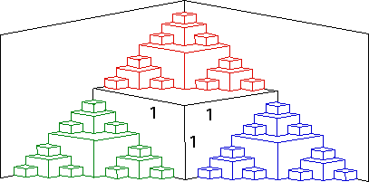

3. First approach. Refer again to the picture to see that the shape is made up of a collection of cubes.
|
Here is a tabulation of the cubes.
| step | number of cubes | cube side length |
| 1 | 1 | 1 |
| 2 | 3 | 1/2 |
| 3 | 9 | 1/4 |
| 4 | 27 | 1/8 |
| ... | ||
| n | 3n-1 | 1/2n-1 |
So the total volume is
The sum is a geometric series with ratio
Second approach. Note the whole shape consists of a cube of side length 1, together with
three smaller copies of the shape - one red, one green,
and one blue - each shrunk by
|  |
Consequently, the three small copies have volume
Say the volume of the whole shape is x. Then we see
We know x is finite, because the entire shape is contained in a cube of side
length 2. Consequently, we can solve this equation for x, obtaining
Return to PaperFolding Lab.